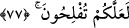

evlâdındansın.”
Onların dünya ehli oldukları ve o dünyalıktan harcadıkları vehmedilmesin. Onlar
ancak sehâvet, fütüvvet, mürüvvet, cömertlik ve asâlet sâhibi kimselerdi. Dünya onlara
gelirdi de hemen onu elden çıkarırlar/infak ederlerdi. Şâirin şu sözü onların hâlini ne
güzel ifâde etmektedir:
Avucunu hep açık tutmaya alıştı, hatta öyle ki
Yummak için onu kapatsa parmak uçları itâat etmezdi ona.
Avucunda canından başka bir şey olmazsa eğer
Onu da cömertçe verirdi. Ona el açan Allah’tan korksun.
77. Ey îmân edenler! Rükû edin; secdeye kapanın; Rabbinize ibadet edin; hayır
işleyin ki kurtuluşa eresiniz.
“Ey îmân edenler! Rükû edin; secdeye kapanın;” Yani namazınızda rükû ve secde
edin. Allah onlara böyle yapmalarını emretti. Çünkü İslâm’ın ilk zamanlarında böyle
yapmıyorlardı. Ebü’l-Leys der ki: “Onlar rükûsuz secde ederlerdi. Allah onlara hem
rükû hem de secde etmelerini emretti.” Bâzıları onların secdesiz rükû yaptıklarını ve
rükûsuz secde ettiklerini söylemiştir.
Kâşifî der ki: “İslâmın başlarında namazda kuûd ve kıyâm vardı. Bu âyetle birlikte
rükû ve sücûd da namaza dâhil oldu.”
Ya da mânâ: “Namaz kılın” demektir. Namaz, rükû ve secde olarak ifâde edilmiştir.
Çünkü onlar namazın en büyük rükünlerindendir.
Size emrettiği diğer ibâdetlerle “Rabbinize ibâdet edin; hayır işleyin ki” nâfile
ibâdetler, sıla-i rahim ve güzel ahlâk gibi yaptığınız ve terk ettiğiniz her şeyde en hayırlı
ve sâlih/uygun olanı araştırın. Bir hadiste “Nâfilelerinizi güzel işleyin, çünkü onlarla
farzlarınız tamamlanır.”[52] buyrulmuştur. Merfû bir hadiste ise şöyle buyrulur:
“Nâfile mü’minin Rabbine hediyesidir. Sizden birisi hediyesini güzel ve hoş
eylesin.”[53]
el-Müfredât’ta der ki: “Hayır; akıl, adâlet, fazîlet ve faydalı şeyler gibi herkesin
rağbet ettiği şeydir. Şer ise bunun zıddıdır.”
Hayrın iki çeşit olduğu söylenmiştir:
1- Mutlak hayır. Bu, her durumda ve herkesçe rağbet edilen bir hayır olmasıdır.
Nitekim Hz. Peygamber (a.s.) cenneti vasfetmiş ve şöyle buyurmuştur: “Kendisinden
sonra cehennem ateşi olan hayır hayır değildir. Kendisinden sonra cennet olan şer de
şer değildir.”[54]
2- Mukayyed hayır. Bu da, birisi için hayır olanın diğeri için şer olmasıdır. Bir mal
gibi ki belki Zeyd için hayır, Amr için şer olabilir.